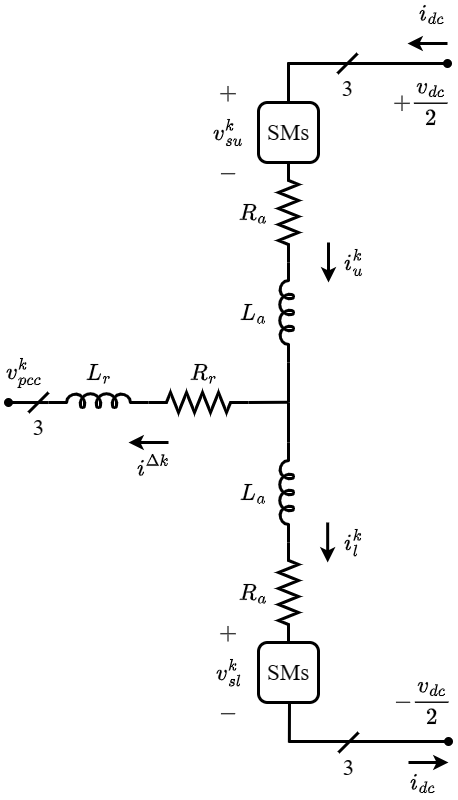
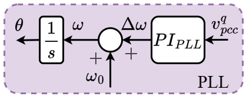
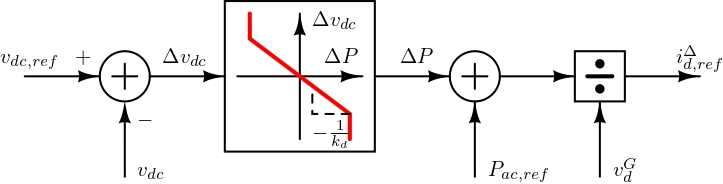

MMC
The Modular Multilevel Converter (MMC) is an emerging technology in modern high-voltage direct current (HVDC) systems, renewable energy integration, and motor drives. MMCs provide high efficiency, scalability, and reduced harmonic distortion compared to traditional voltage-source converters (VSCs). Due to their modular structure, MMCs can operate at high power/voltage ratings while maintaining low switching losses and improved output voltage quality.
Mathmatical Modeling
MMC Architecture
An MMC consists of multiple cascaded submodules (SMs) per phase, typically arranged in an upper and lower arm configuration. Each phase of the converter consists of:
- Submodules (SMs): Each SM contains capacitors and semiconductor switches, enabling independent voltage control.
- Arms: Each phase-leg has an upper and lower arm, controlling the output voltage and current.
- Arm Inductors: Limiting circulating currents and improving system stability.
- DC-Link: Connects the converter to the DC grid, providing the required power exchange.
The general structure of a three-phase MMC is shown in Figure 1.

Operating Principles
The MMC operates based on the selective activation of submodules, generating a staircase output voltage waveform. The main operational principles include:
- Capacitor Voltage Balancing: Ensuring uniform charge distribution across submodules.
- Circulating Current Suppression: Reducing unwanted AC and DC currents flowing within the converter’s arms that do not contribute to power transfer between the AC and DC sides, which improves efficiency.
- Modulation Techniques: Reducing unwanted AC and DC currents flowing within the converter’s arms that do not contribute to power transfer between the AC and DC sides, which improves efficiency.
LTI Model
The LTI model presented in Sakinci, Lekić, and Beerten (2022) has been extended to include measurement filters that are present in the practical converters.
MMC Dynamics
The detailed dynamics of the converter model are presented using the procedure developed in Bergna-Diaz, Freytes, et al. (2018),Bergna-Diaz, Zonetti, et al. (2018), Freytes (2017), Sakinci, Lekić, and Beerten (2022),Lekić, Ergun, and Beerten (2020). Figure 1 shows a single-phase architecture for a three-phase MMC, with all variables defined for all the phases, \(k\in \{a,b,c\}\). The submodules are represented by an averaged equivalent model, allowing the voltages and currents in the upper and lower arms to be described by (\(\ref{eq:VI_UL}\))
\[\begin{equation} \label{eq:VI_UL} v_{su,l}^k = m_{u,l}^k v_{cu,l}^k \hspace{1cm} i_{su,l}^k = m_{u,l}^k i_{u,l}^k \end{equation}\]
where \(m^k_{u,l}\) are the corresponding upper and lower arm insertion indices.
The \(\Sigma-\Delta\) nomenclature can be used to represent the variables in the upper and lower arms Bergna-Diaz, Freytes, et al. (2018) as stated in (\(\ref{eq:i_SD}\)), (\(\ref{eq:vc_SD}\)), (\(\ref{eq:m_SD}\)), (\(\ref{eq:vs_SD}\)).
\[\begin{equation}\label{eq:i_SD} i^{\Delta k} = i_u^k - i_l^k, \qquad i^{\Sigma k} = \frac{i_u^k + i_l^k}{2}. \end{equation}\]
\[\begin{equation}\label{eq:vc_SD} v^{\Delta k}_c = \frac{v^k_{cu} - v^k_{cl}}{2}, \qquad v^{\Sigma k}_c = \frac{v^k_{cu} + v^k_{cl}}{2}. \end{equation}\]
\[\begin{equation}\label{eq:m_SD} m^{\Delta k} = m^k_u - m^k_l, \qquad m^{\Sigma k} = m^k_u + m^k_l. \end{equation}\]
\[\begin{equation}\label{eq:vs_SD} v^{\Delta k}_s = \frac{-v^k_{su} + v^k_{sl}}{2} = -\frac{m^{\Delta k} v^{\Sigma k}_c + m^{\Sigma k} v^{\Delta k}_c}{2}, \qquad v^{\Sigma k}_s = \frac{v^k_{su} + v^k_{sl}}{2} = \frac{m^{\Sigma k} v^{\Sigma k}_c + m^{\Delta k} v^{\Delta k}_c}{2}. \end{equation}\]
The differential equations describing the dynamic behavior of the MMC can be derived by using the variables stated in (\(\ref{eq:i_SD}\)), (\(\ref{eq:vc_SD}\)), (\(\ref{eq:m_SD}\)), (\(\ref{eq:vs_SD}\)).
\[\begin{equation}\label{eq:a} \dot{\vec{i}}^{\Delta dq} = \frac{\vec{v}_s^{\Delta dq} - (\omega L_t \boldsymbol{J}_2 + R_t \boldsymbol{I}_2)\vec{i}^{\Delta dq} - \vec{v}^{dq}_{pcc}}{L_t} \end{equation}\]
\[\begin{equation}\label{eq:b} \dot{\vec{i}}^{\Sigma dq} = -\frac{\vec{v}_s^{\Sigma dq} + (R_a \boldsymbol{I}_2 - 2\omega L_a \boldsymbol{J}_2)\vec{i}^{\Sigma dq}}{L_a} \end{equation}\]
\[\begin{equation}\label{eq:c} \dot{i}^{\Sigma z} = \frac{v_{dc}}{2L_a} - \frac{v_s^{\Sigma z} + R_a i^{\Sigma z}}{L_a} \end{equation}\]
\[\begin{equation}\label{eq:d} \dot{\vec{v}}_c^{\Delta dq} = \frac{N}{2C}\vec{i}_s^{\Delta dq} - \omega \boldsymbol{J}_2 \vec{v}_c^{\Delta dq} \end{equation}\]
\[\begin{equation}\label{eq:e} \dot{\vec{v}}_c^{\Delta Zdq} = -\frac{N}{8C}\Psi - 3\omega \boldsymbol{J}_2 \vec{v}_c^{\Delta Zdq} \end{equation}\]
\[\begin{equation}\label{eq:f} \dot{\vec{v}}_c^{\Sigma dqz} = \frac{N}{2C}\vec{i}_s^{\Sigma dqz} + 2\omega \boldsymbol{J}_3 \vec{v}_c^{\Sigma dqz} \end{equation}\]
\[\begin{equation}\label{eq:g} \dot{v}_{dc} = \frac{1}{C_{dc}}\left(i_{dc} - 3 i^{\Sigma z}\right) \end{equation}\]
where,
\[\begin{equation} \vec{i}_s^{\Delta dq} = \boldsymbol{P}_\omega(t) \Big( \boldsymbol{P}_{-2\omega}^{-1}(t)\vec{m}_{\tau_d}^{\Sigma dqz} \circ \frac{\boldsymbol{P}_{\omega}^{-1}(t)\vec{i}^{\Delta dqz}}{2} + \boldsymbol{P}_{\omega}^{-1}(t)\vec{m}_{\tau_d}^{\Delta dqZ} \circ \boldsymbol{P}_{-2\omega}^{-1}(t)\vec{i}^{\Sigma dqz} \Big) \end{equation}\]
\[\begin{equation} \vec{i}_s^{\Sigma dq} = \boldsymbol{P}_{-2\omega}(t) \Big( \boldsymbol{P}_{-2\omega}^{-1}(t)\vec{m}_{\tau_d}^{\Sigma dqz} \circ \boldsymbol{P}_{-2\omega}^{-1}(t)\vec{i}^{\Sigma dqz} + \boldsymbol{P}_{\omega}^{-1}(t)\vec{m}_{\tau_d}^{\Delta dqZ} \circ \boldsymbol{P}_{\omega}^{-1}(t)\frac{\vec{i}^{\Delta dqz}}{2} \Big) \end{equation}\]
\[\begin{equation} \vec{v}_s^{\Delta dqz} = -\frac{\boldsymbol{P}_{\omega}(t)}{2} \Big( \boldsymbol{P}_{\omega}^{-1}(t)\vec{m}_{\tau_d}^{\Delta dqZ} \circ \boldsymbol{P}_{-2\omega}^{-1}(t)\vec{v}_c^{\Sigma dqz} + \boldsymbol{P}_{-2\omega}^{-1}(t)\vec{m}_{\tau_d}^{\Sigma dqz} \circ \boldsymbol{P}_{\omega}^{-1}(t)\vec{v}_c^{\Delta dqz} \Big) \end{equation}\]
\[\begin{equation} \Psi = \begin{bmatrix} i^{\Delta d} m_{\tau_d}^{\Sigma d} + 2 i^{\Sigma d} m_{\tau_d}^{\Delta d} + i^{\Delta q} m_{\tau_d}^{\Sigma q} + 2 i^{\Sigma q} m_{\tau_d}^{\Delta q} + 4 i^{\Sigma z} m_{\tau_d}^{\Delta Zd} \\[4pt] i^{\Delta q} m_{\tau_d}^{\Sigma d} + 2 i^{\Sigma d} m_{\tau_d}^{\Delta q} - i^{\Delta d} m_{\tau_d}^{\Sigma q} - 2 i^{\Sigma q} m_{\tau_d}^{\Delta d} + 4 i^{\Sigma z} m_{\tau_d}^{\Delta Zq} \end{bmatrix} \end{equation}\]
\(N\) represents the number of sub-modules, \(C\) is the sub-module capacitance, \(R_a\) and \(L_a\) are the arm resistance and inductance, \(R_t = R_r+\frac{R_a}{2}\) and \(L_t = L_r+\frac{L_a}{2}\) represent the equivalent AC resistance and inductance, and \(C_{dc}\) represents the equivalent DC side capacitance.
Equations \(\eqref{eq:a}\), \(\eqref{eq:b}\), \(\eqref{eq:c}\), \(\eqref{eq:d}\) , \(\eqref{eq:e}\), \(\eqref{eq:f}\), \(\eqref{eq:g}\)represent variables using multiple \(dqz\)-frames by applying Park’s transformation at different frequencies. The \(\Delta\) state variables are derived using the angular frequency components \(\omega\) and \(3\omega\), whereas the \(\Sigma\) variables use \(-2\omega\) components Bergna-Diaz, Freytes, et al. (2018).
The insertion indices \(\vec{m} = \begin{bmatrix} \vec{m}^{\Delta dq} & \vec{m}^{\Delta Zdq} & \vec{m}^{\Sigma dqz} \end{bmatrix}^T\) are obtained as stated in \(\eqref{eq:m_derive}\). \[\begin{equation} \label{eq:m_derive} \vec{m} = \frac{2}{v_{dc}}\begin{bmatrix} -\vec{v}_{s,ref}^{\Delta dqZ} \\ \vec{v}_{s,ref}^{\Sigma dqz} \end{bmatrix} \end{equation}\]
Time Delays
The MMC’s impedance characteristics are highly susceptible to time delays (computational time delay, sampling delay, modulation delay, etc.) in the system, particularly in the low (10–100 Hz) and high (several kHz) frequency ranges . Therefore, these time delays must be considered during the modeling of the impedances. For simplicity, all time delays within the control architecture are consolidated into a single delay, based on the assumption that this aggregated delay can effectively represent the impact of the computational time delay on the impedance characteristics Sakinci, Lekić, and Beerten (2022).
The time delay (\(\tau_d\)) can be expressed as a rational transfer function using the Pad{'e} approximation stated in \(\eqref{eq:pade}\), where \(m\) and \(n\) are the numerator and denominator approximation orders, respectively . \[\begin{equation} \label{eq:pade} \boldsymbol{T}_{delay} = e^{-s\tau_d} \approx \frac{b_0 + b_1(\tau_d s)^1 + \cdots + b_m(\tau_d s)^m}{a_0 + a_1(\tau_d s)^1 + \cdots + a_n(\tau_d s)^n} \end{equation}\]
The rational transfer function approximation is then converted into the state space form Wang et al. (2016) with inputs \(\begin{bmatrix} \vec{m}^{\Delta dq} & \vec{m}^{\Sigma dqz} \end{bmatrix}^T\), the insertion indices obtained from the controller outputs as given in \(\eqref{eq:m_derive}\), and the outputs \(\begin{bmatrix} \vec{m}_{\tau_d}^{\Delta dqz} & \vec{m}_{\tau_d}^{\Sigma dqz} \end{bmatrix}^T\), the insertion indices which are used in the differential equations given in \(\eqref{eq:a}\), \(\eqref{eq:b}\), \(\eqref{eq:c}\), \(\eqref{eq:d}\) , \(\eqref{eq:e}\), \(\eqref{eq:f}\), \(\eqref{eq:g}\). A third-order (\(m=n=3\)) approximation is used in this study because it accurately represents the impact of computational delay up to the 1 kHz frequency range.
Controller Dynamics
The voltage references in \(\eqref{eq:m_derive}\) are obtained as outputs of the controllers and the thirteen differential equations stated in \(\eqref{eq:a}\), \(\eqref{eq:b}\), \(\eqref{eq:c}\), \(\eqref{eq:d}\) , \(\eqref{eq:e}\), \(\eqref{eq:f}\), \(\eqref{eq:g}\). The controllers can specify the voltage references; however, by default, all voltage reference values are set to zero, except for \(v_{c,\mathrm{ref}}^{z}\), which is set to \(\frac{v_{dc}}{2}\). When the controller specifies the voltage references, additional differential equations are required to represent the PI controllers in the \(dqz\) frames Bergna-Diaz, Freytes, et al. (2018), Sakinci and Beerten (2019),Sakinci, Lekić, and Beerten (2022).
 （a）Inner and outer controllers with time delay
（a）Inner and outer controllers with time delay

（b）Phase-locked loop (PLL) （c）Generic PI controller structure
（c）Generic PI controller structure

（d）Droop controllerFigure: MMC control architecture consisting of (a) inner controllers, outer controllers and time delay, (b) PLL, (c) generic PI structure, and (d) droop controller.
The primary (inner) and secondary (outer) controllers that constitute the framework of the MMC control architecture are shown in Figure 2 (a) DC voltage control, active power control, and reactive power control act as the outer controllers, whereas output current control (OCC) and circulating current control (CCC) act as the inner controllers.
For the PI structure illustrated in Figure 2 (a), each controller, as well as the phase-locked loop (PLL) shown in Figure 2 (b), can be defined using a set of differential equations given in \(\eqref{eq:generic_PI_1}\)–\(\eqref{eq:generic_PI_2}\).
\[\begin{equation}\label{eq:generic_PI_1} \dot{\xi} = \text{Ref.} - \text{Meas.} \end{equation}\]
\[\begin{equation}\label{eq:generic_PI_2} \text{Out} = K_P \bigl( \text{Ref.} - \text{Meas.} \bigr) + K_I \xi \end{equation}\]
Measurment Filters
Filtering measured signals is often required for stable operation of the controllers in order to eliminate noise and correctly track changes in control variables. Filters also improve system stability by reducing undesirable high-frequency oscillations, resulting in more reliable and precise control. However, each filter in the system has a considerable effect on the converter impedance characteristics. As a result, these filters must be considered during modeling.
Measurement filters can be modeled as first- or second-order low-pass filters, depending on the variable they govern. Commonly filtered variables in the MMC control structure are marked Figure 2(a). The variables \(v_{pcc}^{dq}\) in the OCC are filtered using a first-order low-pass filter to obtain the filtered voltages \(v_{pcc,filt}^{dq}\).
\[\begin{equation}\label{eq:vdq_filter_1} \dot{\xi}^{filt} = -\frac{1}{T_{filt}} \xi^{filt} + v_{pcc}^{dq} \end{equation}\]
\[\begin{equation}\label{eq:vdq_filter_2} v_{pcc,filt}^{dq} = \frac{1}{T_{filt}} \xi^{filt} \end{equation}\]
where \(T_{filt}\) represents the time constant of the first-order low-pass filter. The cut-off frequency of the filter is given by
\[\begin{equation}\label{eq:vdq_filter_cutoff} f_{filt} = \frac{1}{T_{filt}} \end{equation}\]
Similarly, the measured input variables of outer controllers, such as \(P_{ac}\), \(Q_{ac}\), and \(v_{dc}\), are subjected to second-order low-pass filters.
\[\begin{equation}\label{eq:PQvdc_filter_1} \dot{\xi}_1^{filt} = -\omega_{filt}^2 \xi_2^{filt} - 2 \zeta \omega_{filt} \xi_1^{filt} + x \end{equation}\]
\[\begin{equation}\label{eq:PQvdc_filter_2} \dot{\xi}_2^{filt} = \xi_1^{filt} \end{equation}\]
\[\begin{equation}\label{eq:PQvdc_filter_3} x_{filt} = \omega_{filt}^2 \xi_2^{filt} \end{equation}\]
where \(x\) represents the input variables \(P_{ac}\), \(Q_{ac}\), and \(v_{dc}\); \(x_{filt}\) represents the corresponding filtered variables \(P_{ac,filt}\), \(Q_{ac,filt}\), and \(v_{dc,filt}\), respectively. Furthermore, \(\omega_{filt}\) denotes the natural frequency of the filter, and \(\zeta\) represents the damping factor.
Operating Point
A power flow or steady-state simulation can be used to determine the operating point of the converter . Using this approach, the following parameters are determined: the DC voltage magnitude \(V_{dc}\), the active power at the DC terminal \(P_{dc}\) (flowing from the AC side to the DC side), the AC voltage magnitude and phase \(V_{ac}\) and \(\theta\), respectively, the active power at the AC terminal \(P_{ac}\) (flowing from the AC side to the DC side), and the reactive power at the AC terminal \(Q_{ac}\) (flowing from the AC side to the DC side).
The converter reference values are then obtained using the AC and DC voltages and powers as follows.
\[\begin{equation}\label{eq:op_vdc_ref} v_{dc,\mathrm{ref}} = V_{dc} \end{equation}\]
\[\begin{equation}\label{eq:op_vpcc_d} v_{pcc}^d = V_{ac} \cos(\theta) ,\quad v_{pcc}^q = - V_{ac} \sin(\theta) \end{equation}\]
\[\begin{equation}\label{eq:op_id_ref} i_{\mathrm{ref}}^{\Delta d} = \frac{2 \left( v_{pcc}^d P + v_{pcc}^q Q \right)} {3 \left( (v_{pcc}^d)^2 + (v_{pcc}^q)^2 \right)} ,\quad i_{\mathrm{ref}}^{\Delta q} = \frac{2 \left( v_{pcc}^q P - v_{pcc}^d Q \right)} {3 \left( (v_{pcc}^d)^2 + (v_{pcc}^q)^2 \right)} \end{equation}\]
Steady State Solution and Admittance Model
After modeling all the necessary differential equations for the MMC and the controllers, an equilibrium point is obtained using the Julia package NLsolve Mogensen et al. (2020), which represents the solution to these differential equations. Further, the system of differential equations is represented as a multi-input multi-output (MIMO) system in a linearized form, as given in \(\eqref{eq:MIMO_x}\)–\(\eqref{eq:MIMO_y}\).
\[\begin{equation}\label{eq:MIMO_x} \dot{\vec{x}}(t) = \boldsymbol{A}_{MMC} \vec{x}(t) + \boldsymbol{B}_{MMC} \vec{u}(t) \end{equation}\]
\[\begin{equation}\label{eq:MIMO_y} \vec{y}(t) = \boldsymbol{C}_{MMC} \vec{x}(t) + \boldsymbol{D}_{MMC} \vec{u}(t) \end{equation}\]
where \(\vec{x}\) represents all state variables given in \(\eqref{eq:a}\), \(\eqref{eq:b}\), \(\eqref{eq:c}\), \(\eqref{eq:d}\) , \(\eqref{eq:e}\), \(\eqref{eq:f}\), \(\eqref{eq:g}\), together with additional state variables introduced by the applied controllers. The input vector is defined as \(\vec{u} = \begin{bmatrix} v_{dc} & v_{pcc}^d & v_{pcc}^q \end{bmatrix}^T\), and the output vector is defined as \(\vec{y} = \begin{bmatrix} i_{dc} & i^{\Delta d} & i^{\Delta q} \end{bmatrix}^T\).
When the MMC controls the DC voltage, the input and output vectors are redefined as \(\vec{u} = \begin{bmatrix} i_{dc} & v_{pcc}^d & v_{pcc}^q \end{bmatrix}^T\) and \(\vec{y} = \begin{bmatrix} v_{dc} & i^{\Delta d} & i^{\Delta q} \end{bmatrix}^T\), respectively.
The associated matrices \(\boldsymbol{A}_{MMC}\), \(\boldsymbol{B}_{MMC}\), \(\boldsymbol{C}_{MMC}\), and \(\boldsymbol{D}_{MMC}\) in \(\eqref{eq:MIMO_x}\)–\(\eqref{eq:MIMO_y}\) are obtained as Jacobians evaluated around the equilibrium point using the Julia package ForwardDiff . Applying the Laplace transform yields the following MIMO transfer function.
\[\begin{equation}\label{eq:Ymmc_tf} \boldsymbol{Y}_{MMC}(s) = \boldsymbol{C}_{MMC} \left( s \boldsymbol{I} - \boldsymbol{A}_{MMC} \right)^{-1} \boldsymbol{B}_{MMC} + \boldsymbol{D}_{MMC} \end{equation}\]
where \(\boldsymbol{Y}_{MMC}(s)\) denotes the admittance matrix of the system and is given by
\[\begin{equation}\label{eq:Ymmc} \boldsymbol{Y}_{MMC}(s) = \begin{bmatrix} Y_{1,1}(s) & Y_{1,2}(s) & Y_{1,3}(s) \\ Y_{2,1}(s) & Y_{2,2}(s) & Y_{2,3}(s) \\ Y_{3,1}(s) & Y_{3,2}(s) & Y_{3,3}(s) \end{bmatrix} \end{equation}\]
\[\begin{equation}\label{eq:Yac} \boldsymbol{Y}_{ac}(s) = \begin{bmatrix} Y_{dd}(s) & Y_{dq}(s) \\ Y_{qd}(s) & Y_{qq}(s) \end{bmatrix} = \begin{bmatrix} - Y_{2,2}(s) & Y_{2,3}(s) \\ Y_{3,2}(s) & - Y_{3,3}(s) \end{bmatrix} \end{equation}\]
\[\begin{equation}\label{eq:Ydc} \boldsymbol{Y}_{dc}(s) = Y_{1,1}(s) \end{equation}\]
where \(\boldsymbol{Y}_{ac}(s)\) represents the AC-side admittance in the \(dq\) frame and \(\boldsymbol{Y}_{dc}(s)\) represents the DC-side admittance.
When the MMC controls the DC voltage, an additional transformation is required after computing \(\boldsymbol{Y}_{MMC}(s)\) using \(\eqref{eq:Ymmc_tf}\). This transformation involves exchanging the positions of \(v_{dc}(s)\) and \(i_{dc}(s)\) and removing the effect of the DC-link capacitance \(C_{dc}\). The DC-side impedance is then obtained as
\[\begin{equation}\label{eq:dcv_transform} Y_{dc}(s) = 2 \left( \frac{1}{Y_{1,1}(s)} - s C_{dc} \right) \end{equation}\]
Code Explanation
https://github.com/CRESYM/Harmony/tree/main/docs/manual